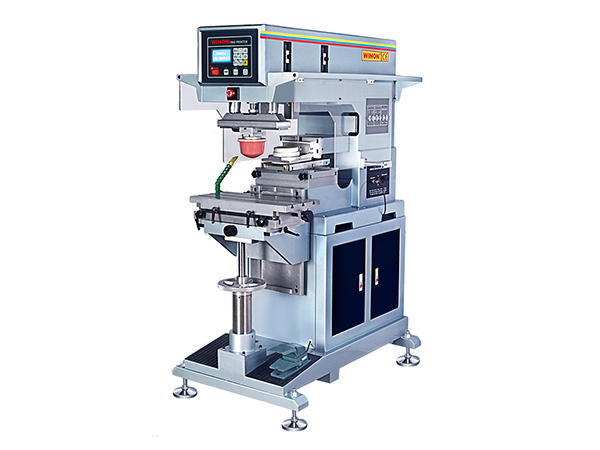
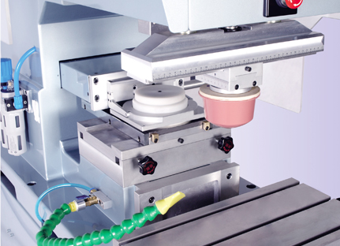
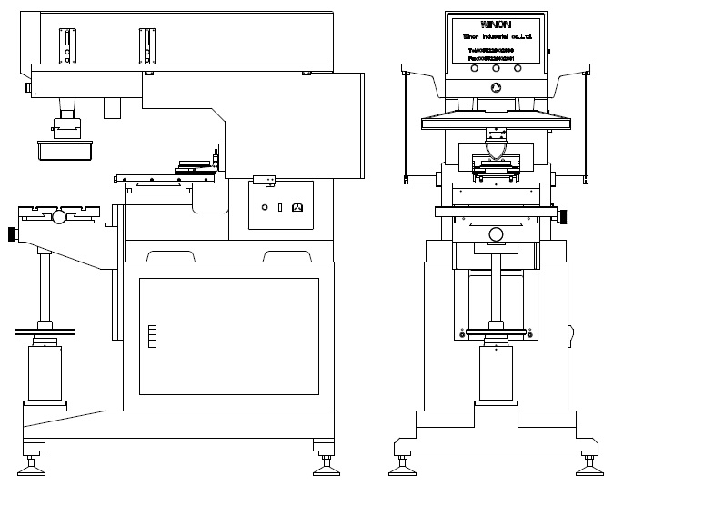

Plastic Products
Electronic housings, containers, bottles, and molded industrial parts.

PAD PRINTING MACHINE
Winon Industrial Co., Ltd. — Hong Kong
| Model | WN-135E |
|---|---|
| Printing Color | 1 Color |
| Ink Cup Diameter | Ø90 mm |
| Steel Plate Size | 100 × 250 mm |
| Maximum Printing Area | Ø80 mm |
| Maximum Workpiece Height | 250 mm |
| Maximum Printing Speed | Up to 1,500 pcs/hour |
| Control System | Touch Screen |
| Power Supply | AC 110V / 220V, 50/60Hz |
| Air Pressure | 6 Bar |
Contact us for the complete technical specification, available configurations, and production requirements.

BUILT FOR PRODUCTION
The WINON WN-135E delivers clean, accurate, and reliable pad printing through its sealed ink cup system, precision pneumatic operation, and intuitive touch-screen controls. It is designed to support continuous production while maintaining excellent print consistency.
Helps maintain a clean printing environment while reducing ink evaporation and solvent consumption.
Intuitive controls make machine setup and parameter adjustment simple and efficient.
Provides accurate and repeatable printing for consistent production results.
Precision pneumatic movement provides smooth and dependable printing cycles.
Built for continuous industrial operation with stable performance during extended production runs.
Suitable for printing on plastic, metal, glass, electronic components, promotional products, and other industrial parts.

The Winon WN-135E is ideal for precision printing on plastic, metal, glass, ceramic, electronic components, medical devices, promotional products, and a wide range of industrial parts requiring clean and consistent print quality.
Electronic housings, containers, bottles, and molded industrial parts.
Pens, gifts, advertising products, and branded merchandise.
Cosmetic bottles, caps, closures, and other packaging components.
Electronic parts, automotive components, medical devices, and precision parts.
Contact Printway Marketing & Services for pricing, machine demonstrations, spare parts, consumables, and technical support.
Request a Quote